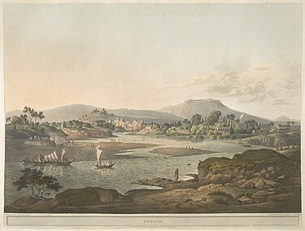

| Welcome To Pune City | |||||
|---|---|---|---|---|---|
| HOME | HISTORY | GEOGRAPHY | CULTURE | IT HUB | TOURIST PLACES |
|
The Maratha Empire :-
Pune was part of the Jagir (fiefdom) granted by the Nizamshahi (Ahmadnagar Sultanate) to Maloji Bhosale in 1599.[32] Maloji Bhosale passed on Jagir of Pune to his son Shahaji Bhosale. The town was destroyed by Murar Jagdeo, a general from the rival Adil Shahi dynasty in 1636.Soon Shahaji himself joined Adilshahi and got his Pune jagir back.At that time he selected the town for the residence of his wife Jijabai, and young son Shivaji, the future founder of the Maratha empire. Shahaji appointed Dadoji Konddeo to help Jijabai in the administration of Jagir and in the reconstruction of the town.The Lal Mahal residence of Jiajabai and Shivaji was completed in 1640 AD.[27] Shivaji spent his young years at the Lal Mahal. Jijabai is said to have commissioned the building of the Kasba Ganapati temple. The Ganesha idol consecrated at this temple has been regarded as the presiding deity (Gramadevata) of the city.[33] Pune changed hands between the Mughals and the Marathas many times during the rest of the 1600s.Recognizing the military potential of Pune, the Mughal general Shaista Khan and later, the emperor Aurangzeb further developed the areas around the town.[34] From 1703 to 1705, towards the end of the 27-year-long Mughal–Maratha Wars, the town was occupied by Mughal emperor Aurangzeb and its name was changed temporarily to Muhiyabad.[15][35] This name was abandoned and reverted to its original name soon after Aurangzib's death. British Rule :-
The Third Anglo-Maratha War broke out between the Marathas and the British East India Company in 1817. The Peshwas were defeated at the Battle of Khadki (then spelled Kirkee) on 5 November near Pune and the city was seized by the British. It was placed under the administration of the Bombay Presidency and the British built a large military cantonment to the east of the city (now used by the Indian Army).[citation needed] The Southern Command of the Indian Army, established in 1895, is headquartered in Pune cantonment.[48][49] Harris railway bridge, Dapodi in 1858. The city of Pune was known as Poona during British rule. Poona Municipality was established in 1858. A railway line from Bombay to the city opened in 1858, run by the Great Indian Peninsula Railway (GIPR).[50][51] Navi Peth, Ganj Peth (now renamed Mahatma Phule Peth) were developed during the British Raj. |
 | ||||
|
See Also |
Video for Reference :-
|
Pune Map
|
|||